Introduction
Short introduction to Lab 1
What we want to achieve in this lab...
Switch to Modeling Perspective
- After a fresh installation of Eclipse you will get the Welcome Page
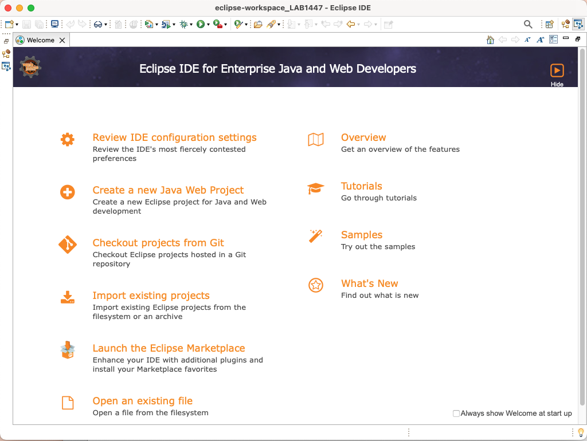
- Next switch to the Modeling Perspective
- Click on the Menu "Window" on top of Eclipse
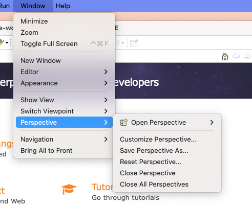
- Click on Open Perspective then on Other
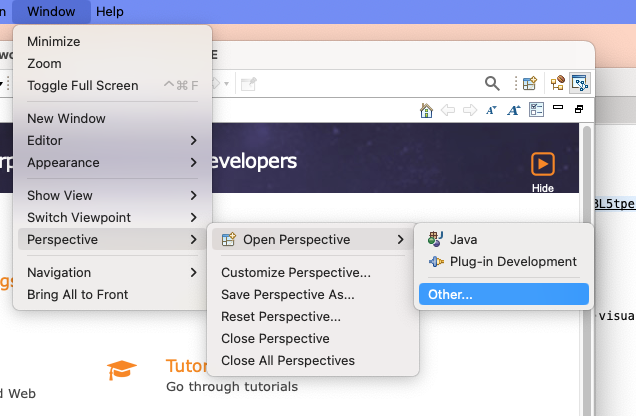
- Dialog opens with list of perspectives
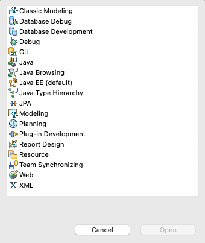
- Scroll down and Select "Modeling" from the list
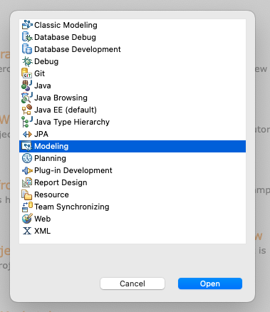
- The Modeling Perspetive opens. You can also switch Perspectives using the icon on the top right corner
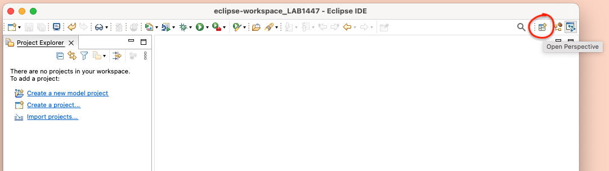
Create a project
- Click on Create a new Model Project or Create Project
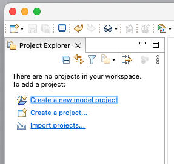
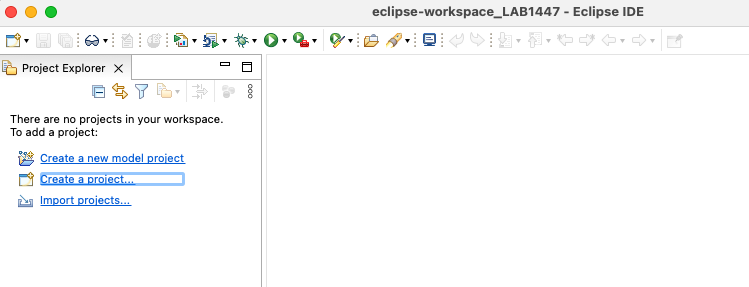
- In the case you selected "Create a Project" a wizard will be shown.
- Search and select the modeling project type
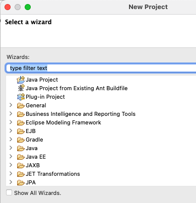
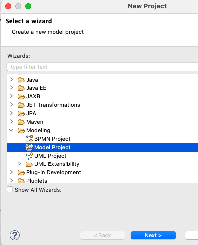
- Provide a name for your new project.
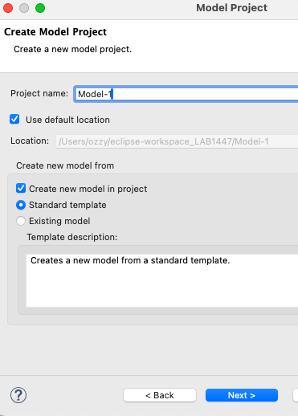
- Select "General" from Categegories and "Blank Package" from Templates
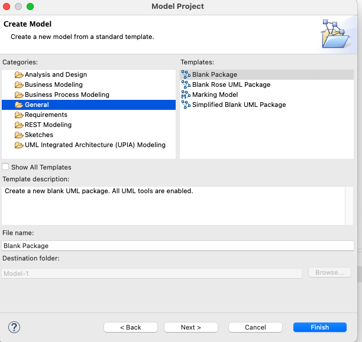
- Have a look at your freshly created new Project
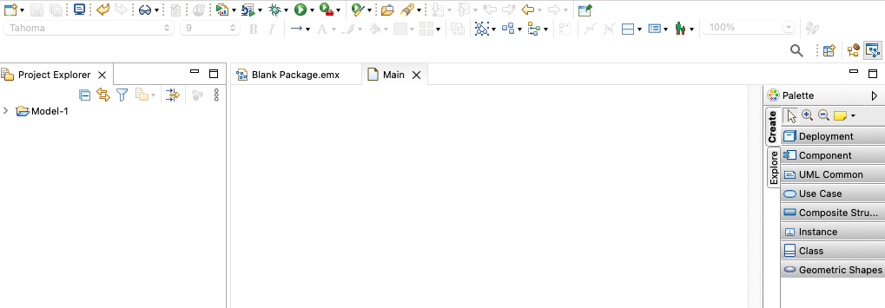
Basic UML Models and Basic UML Diagrams
- If Project is collapsed, click on the > symbols to uncollapse Project and Elements
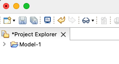
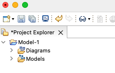
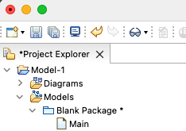
- Add new Class to Model by right clicking the Package and select the class entry in the UML menu
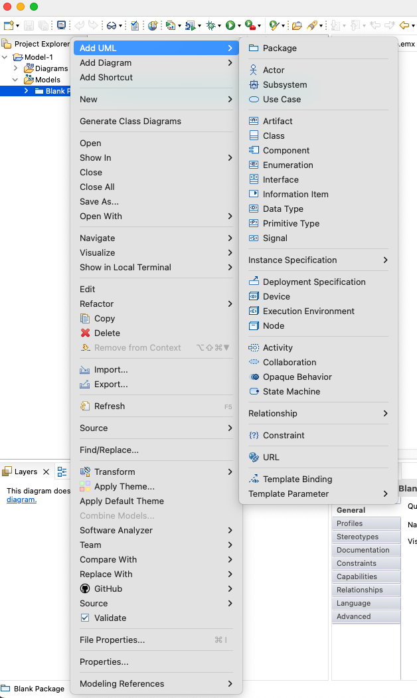
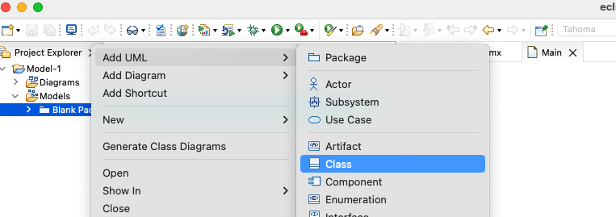
- This creates a fresh new class. Name this new class "Customer"
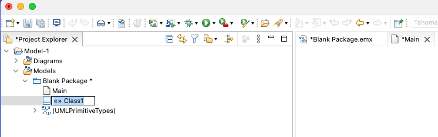
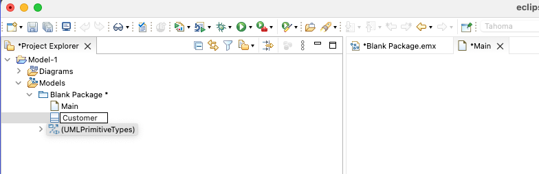
- Next add a new attribute to this class using the context menue of the element and name it "custID"
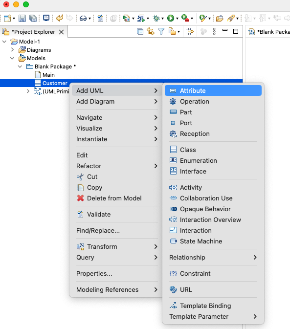
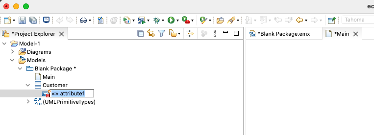
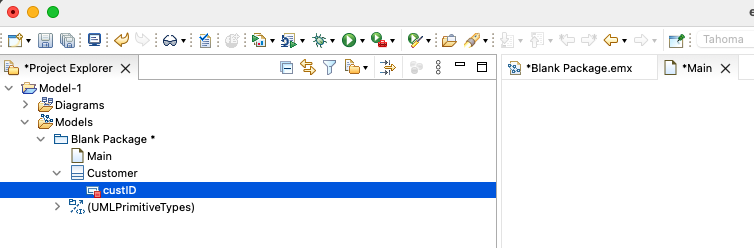
- Now create an additional attribute and name it "custName"
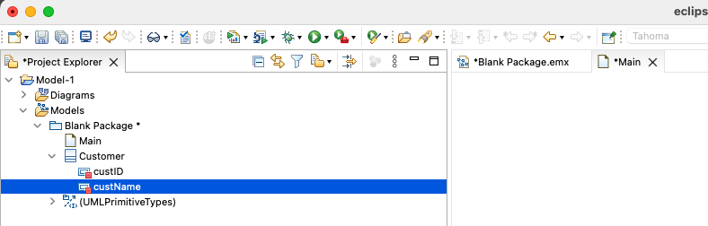
- Create a new Diagram to manage all customer related model artifacts and name it "CustomerStore_Class"
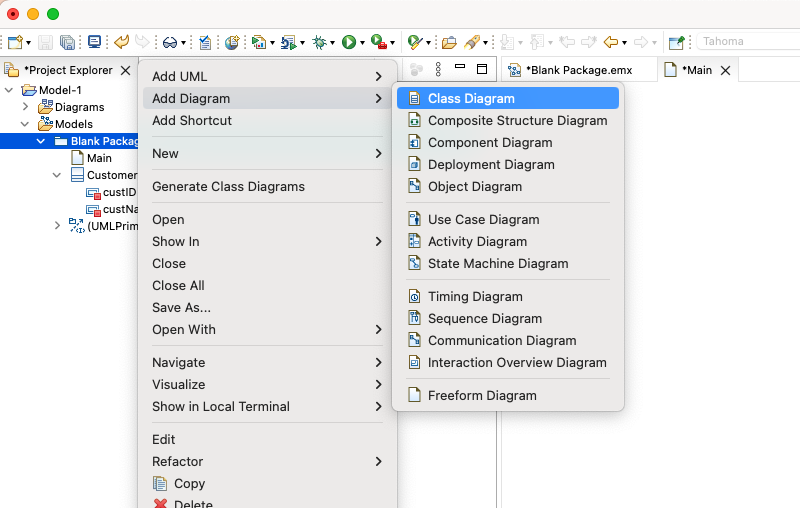
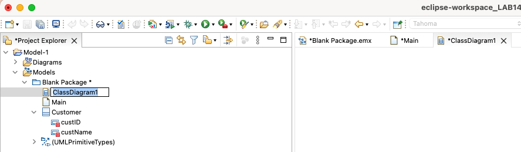
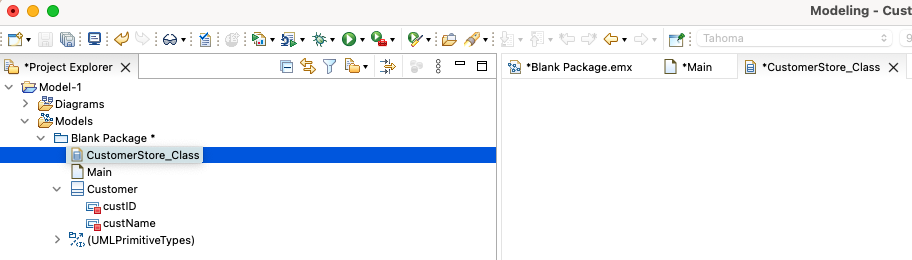
- Add our "Customer" class to this diagram by using the context menue of the item
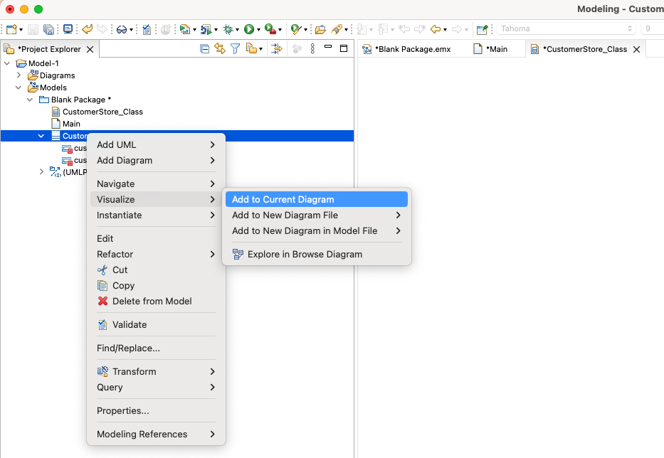
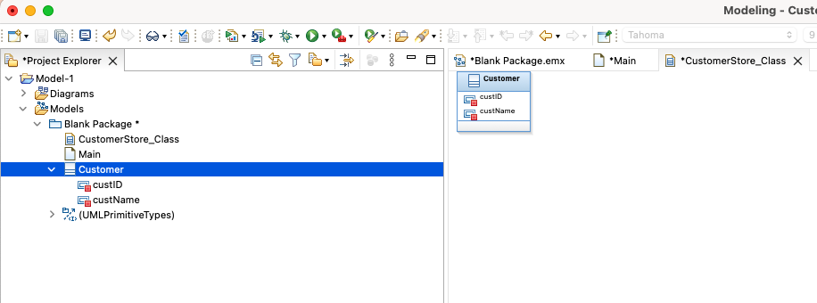
- Don't forget to save all your changes!
How to import existing artifacts
- Right click Project to open context menu and select Import
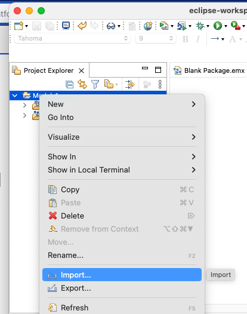
- In this lab we want to import from the filesystem, please select "file system" in the wizard dialog
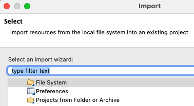
- click on Next
- In the file system dialog browse for the "Simple-Model" folder from your repository
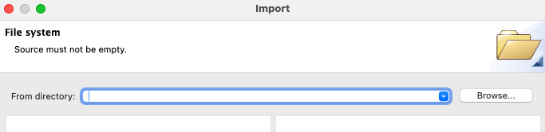
- click on Browse and select "Simple-Model"
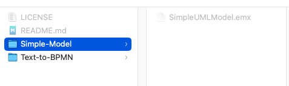
- click on Open
- The Import dialog opens
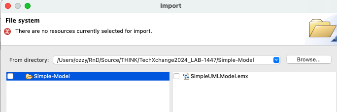
- Select the folder on the left (checkbox) and the model element will be automatically selected.
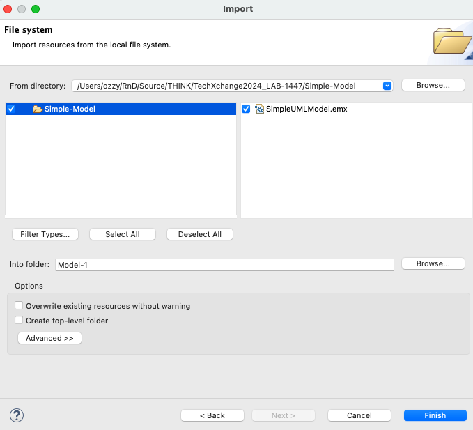
- Click on Finish to start the import
- The modeling artifact is imported and "SimpleUMLModel" is shown.
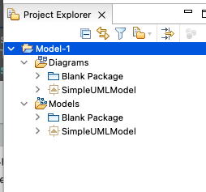
- Doublelick on the newly created Model and a migration dialog will open as the artifacts were created with older version.
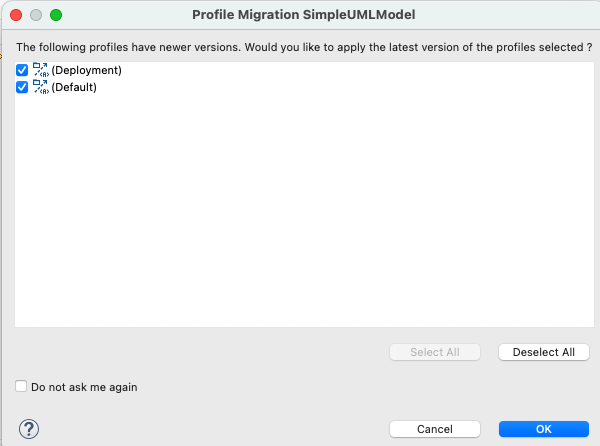
- Just accept the default settings and the diagram will be opened
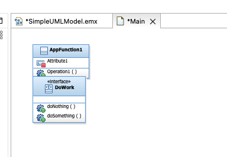
- To have a better view, right click on the canvas to open context menue ans select "Arrange All"
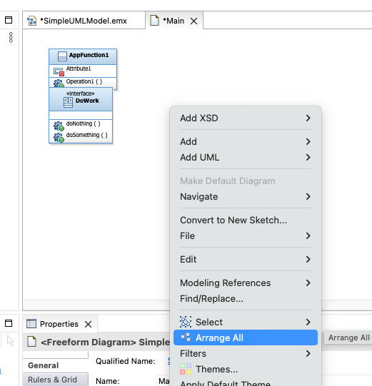
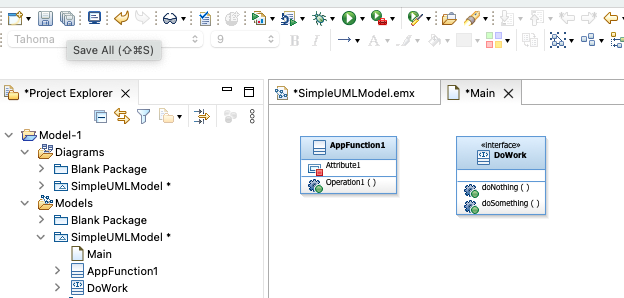
How to add a new UML artifact to existing diagram
- Adding new UML artifacts to a diagram can be done by using the "Palette" or the context menue of the diagram.
- First we will use the "Palette"
- On the right side of DevOps Model Architect you will find the "Palette" menue.
- Click on "Class" entry to get all UML class types available
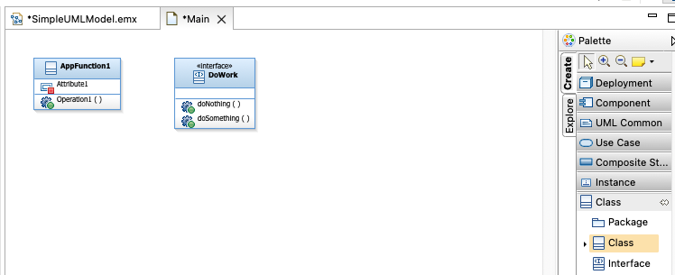
- Drag and drop the "Class" element from the Palette to the open diagram.
- A fresh new class is added and the name is selected for change. Change the name to "APPF2"
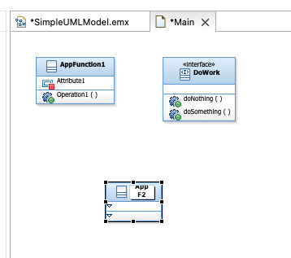
- Now we want to create a relationship from "APPF2" to "AppFunction1"
- click and drag the "incomming" icon to "AppFunction1"
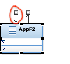
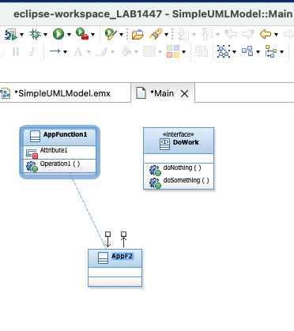
- A new dialog opens and use "Create Instance" type
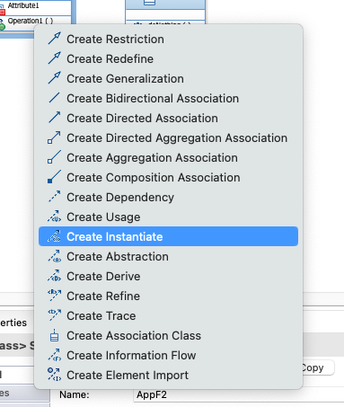
- The relation "create instance" is established between these two elements
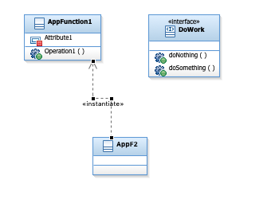
- Do not forget to save your changes!
Conclusion of Lab 1
In this Lab we have been introduced how to use DevOps Model Architect to create a project, work on simple diagrams and import existing artifacts.